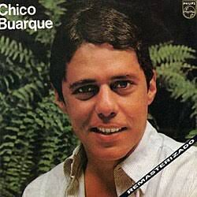
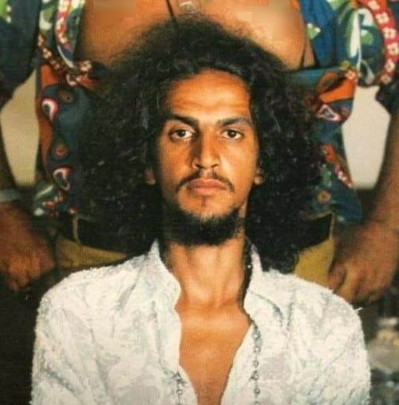

Chico Buarque é um dos maiores ícones da cultura brasileira, destacando-se como cantor, compositor, escritor e uma voz fundamental de resistência durante a ditadura militar. Sua obra na MPB e na literatura, premiada com o Prêmio Camões, é marcada por grande sensibilidade poética e crônicas do cotidiano.
Geraldo Vandré marcou a resistência cultural com uma canção que se tornou símbolo de mobilização e esperança durante a ditadura militar.


Caetano Veloso apresentou uma canção inventiva e crítica, incorporando a linguagem urbana e a liberdade estética do Tropicalismo.
Elis Regina eternizou uma canção associada à anistia, ao retorno dos exilados e à esperança de redemocratização do Brasil.
Gilberto Gil, ao lado de Chico Buarque, criou uma obra de forte crítica à censura e ao silêncio imposto pela repressão.
Ney Matogrosso destacou-se pela interpretação intensa e pela presença cênica que desafiava padrões e afirmava liberdade em plena ditadura.
Gonzaguinha usou ironia e crítica social para questionar a obediência e as desigualdades presentes no cotidiano brasileiro.
Milton Nascimento transformou a canção em uma homenagem à juventude e à memória de Edson Luís, tornando-a símbolo de esperança democrática.
Raul Seixas construiu uma persona irreverente e contestadora, usando o rock para expressar inconformismo e liberdade individual.